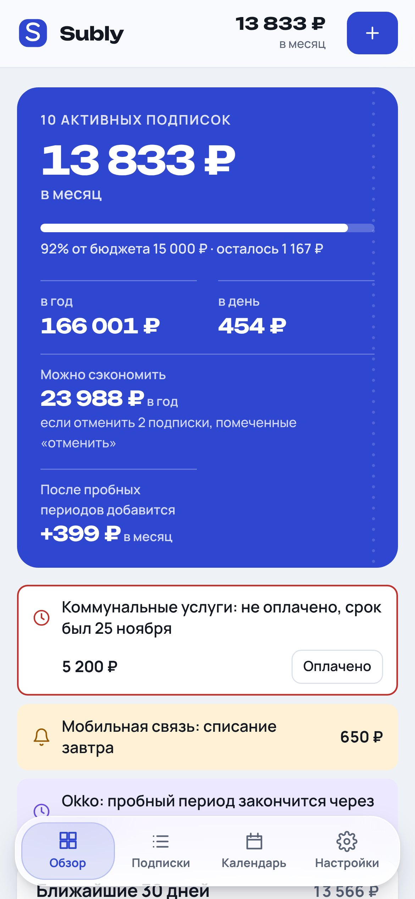
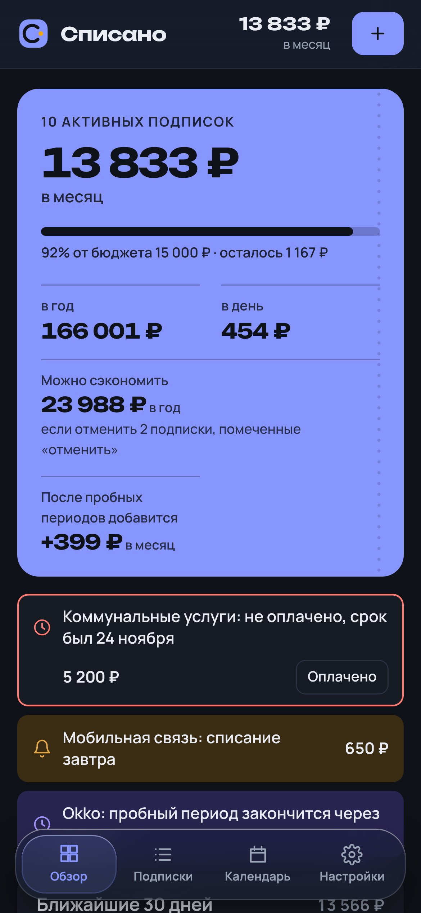

Напомнит за день. Даже если приложение закрыто.
О списании, о счёте за квартиру и о конце пробного периода, пока его ещё можно отменить.
Новое
Трекер подписок, который предупреждает раньше банка.



Одна подписка почти ничего не стоит. Десять стоят как ещё один счёт за квартиру.
О списании, о счёте за квартиру и о конце пробного периода, пока его ещё можно отменить.
Рубли, леи, евро, доллары. Курсы обновляются по кнопке.
Без регистрации и доступа к банку. Данные только на телефоне.
Все подписки и регулярные платежи в одной сумме: в месяц, в год и в день.
Каждое списание на своём дне календаря. Видно, какая неделя самая дорогая.
Прогноз на 12 месяцев. Годовые подписки больше не застают врасплох.

Тема меняется вместе с телефоном.
